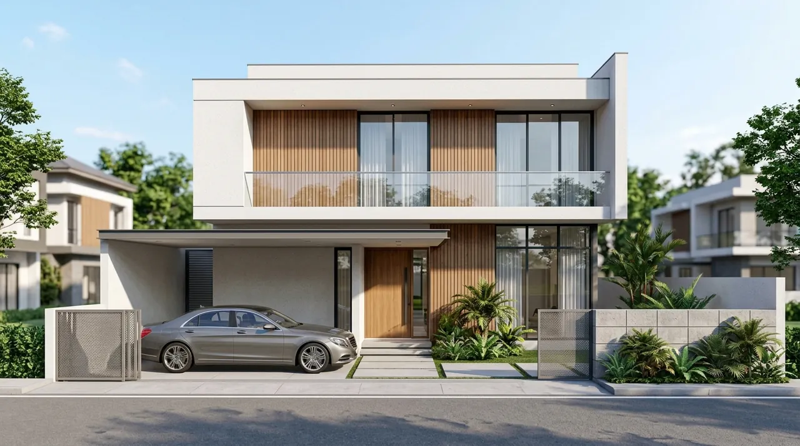

1. Mengapa Biaya Bangun Rumah 2 Lantai Berbeda dengan 1 Lantai?
Pertambahan lantai menggandakan kebutuhan beban dukung tanah dan memerlukan komponen tangga, dak beton bertulang, serta scaffolding.
Kondisi tanah endapan aluvial di Sidoarjo menuntut pondasi tiang strauss pile sedalam 4-6 meter di setiap titik kolom utama. Tanpa strauss pile, resiko penurunan parsial sangat besar.
Selain itu, pengerjaan plat dak lantai 2 memerlukan bekisting multipleks 12 mm, perancah scaffolding pipa, penulangan wiremesh rangkap, serta waterproofing integral untuk mencegah kebocoran menetes ke lantai dasar.
- Kamar Mandi Segaris: Posisikan toilet lantai 2 tepat di atas toilet lantai 1 untuk menghemat jalur pipa plumbing dan mempermudah inspeksi.
- Gunakan Bata Ringan: Bata ringan mengurangi beban mati struktur gedung hingga 30% dibandingkan bata merah konvensional, sehingga dimensi balok beton lebih hemat.
- Uji Rendam Dak: Lakukan uji rendam air selama 2x24 jam pada dak beton sebelum dilakukan pemasangan keramik lantai 2.
2. Simulasi Rincian RAB Rumah 2 Lantai Luas Bangunan 120 m² di Sidoarjo
Estimasi total biaya pembangunan rumah 2 lantai luas 120 m² kelas Menengah-Premium di Sidoarjo berkisar Rp 540 Juta All-In.
Rincian biaya mencakup pekerjaan pondasi dan tanah Rp 75,6 juta (14%), struktur beton bertulang lantai 1 dan 2 Rp 164,7 juta (30,5%), dinding dan plafon Rp 81 juta (15%), atap baja ringan dan genteng beton Rp 48,6 juta (9%), finishing granit Rp 64,8 juta (12%), kusen aluminium Rp 35,1 juta (6,5%), MEP dan sanitari Rp 37,8 juta (7%), serta pengecatan akhir Rp 18,9 juta (3,5%).
Biaya ini setara dengan Rp 4.500.000 per meter persegi dengan sistem borongan turnkey lengkap, tanpa pusing memikirkan upah tukang harian.

Transparansi data Rencana Anggaran Biaya (RAB) menghindarkan pembengkakan biaya di kemudian hari.
3. Tabel Simulasi Anggaran Rumah 2 Lantai Tipe 90, 120, dan 180
Semakin luas ukuran rumah, nilai efisiensi biaya per meter persegi cenderung semakin optimal.
Tabel berikut menyajikan perkiraan total nilai kontrak pembangunan rumah bertingkat di Sidoarjo berdasarkan luasan bangunan.
| Tipe Bangunan (Luas) | Luas Lantai 1 / 2 | Kisaran Biaya / m² | Total Estimasi Anggaran (All-In) |
|---|---|---|---|
| Rumah 2 Lantai Tipe 90 | Lt 1: 50 m² / Lt 2: 40 m² | Rp 4.000.000 – Rp 4.400.000 | Rp 360.000.000 – Rp 396.000.000 |
| Rumah 2 Lantai Tipe 120 | Lt 1: 65 m² / Lt 2: 55 m² | Rp 4.300.000 – Rp 4.800.000 | Rp 516.000.000 – Rp 576.000.000 |
| Rumah 2 Lantai Tipe 150 | Lt 1: 80 m² / Lt 2: 70 m² | Rp 4.400.000 – Rp 5.000.000 | Rp 660.000.000 – Rp 750.000.000 |
| Rumah Mewah Tipe 200+ | Lt 1: 110 m² / Lt 2: 100 m² | Rp 5.200.000 – Rp 6.500.000+ | Rp 1.092.000.000 – Rp 1.365.000.000+ |
4. Panduan Praktis Menghemat Anggaran Bangun Rumah Tingkat di Sidoarjo
Efisiensi anggaran dapat dicapai melalui denah simetris, pemanfaatan void sirkulasi alami, dan pemilihan paket kontraktor turnkey.
Denah dengan tata letak kamar mandi lantai 2 yang berada tepat di atas kamar mandi lantai 1 sangat menghemat panjang instalasi pipa air dan mempermudah perbaikan di masa depan. Gunakan pula void tangga sebagai saluran cahaya alami siang hari.
Pertanyaan yang Sering Diajukan (FAQ)
Kesimpulan Praktis
Mengetahui estimasi biaya bangun rumah 2 lantai sejak awal memberikan Anda kepastian finansial untuk mewujudkan hunian yang kokoh, nyaman, dan bernilai jual tinggi.
Dapatkan estimasi RAB resmi dan konsultasi gratis langsung dari kontraktor ahli kami hari ini. Hubungi kami via WhatsApp untuk survei kavling Anda.